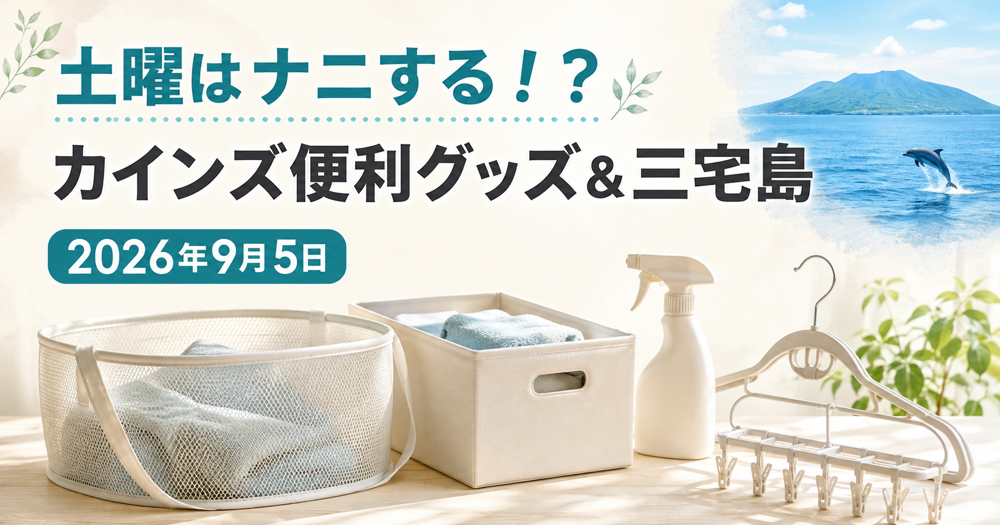

01
イルカ船上ウォッチング
阿古漁港からの体験。1人18,000円〜と公式ページに記載されています。
テレビ紹介商品の記録メディア
2026年9月5日（土）放送
カインズのガチ推しショッピング／三宅島のぷらっとりっぷ
番組公式ページで確認できた内容を掲載しています。カインズ商品の正式名称は公式情報を確認できたものから追記します。

あなたがジャッジ！芸能人ガチ推しショッピング
今回のロケ先はカインズ幕張店です。番組公式では、洗濯ネット、収納BOX、お掃除スプレー、乾燥に特化したハンガーが紹介されました。
放送内容とYahoo!リアルタイム上の反応を手がかりに確認したところ、カインズ公式には「バスケットにもなる洗濯ネット」があります。放送で紹介された商品との一致は、映像または番組公式の追加情報で確認でき次第、確定表示に切り替えます。
Yahoo!リアルタイムの一般投稿は候補発見にのみ使用し、商品名・価格の根拠には使用していません。
日帰り ぷらっとりっぷ
01
阿古漁港からの体験。1人18,000円〜と公式ページに記載されています。
02
ふるさと味覚館-宙-。1人6,500円（持ち込み可）と案内されています。
03
三宅村レクリエーションセンター。1日500円と案内されています。
料金・メニューは放送時点の情報です。季節や仕入れ状況で変わるため、訪問前に各施設へご確認ください。
当サイトは番組公式サイトではありません。未確認の商品名・価格・順位は掲載しません。